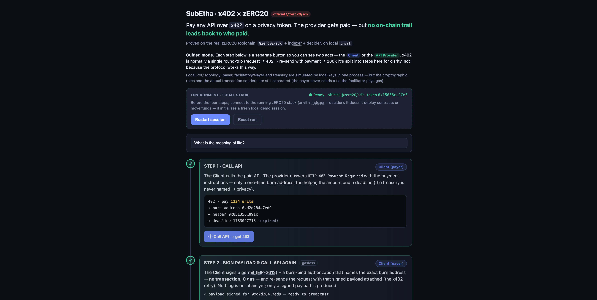

01 · REQUEST
Call the API
The agent requests a paid resource without a human checkout or API key.
SubEtha keeps the HTTP 402 flow and changes the settlement boundary: a fresh burn address in the challenge, a proof-gated mint behind it, and no payer → provider transfer written on-chain.
Built on the official zERC20 toolchain. The current repository is a local, non-production reference implementation — unaudited, with production profile acceptance intentionally gated.
Machine payments make the leak worse. Every request can reveal what an agent depends on — while a fixed provider address exposes revenue, usage, and customer concentration.
API choice, timing, order, and spend become a public trace of workflows, research themes, external dependencies, and cost structure.
A standard payTo address lets observers chart inflows and estimate growth, usage trends, and dependence on key customers.
SubEtha is not a mixer and does not hide the fact that tokens were spent or minted. It changes what the public chain can connect.
The agent requests a paid resource without a human checkout or API key.
The provider returns price and a fresh payTo; the treasury is never handed to the payer.
Permit mode lets the payer sign while the facilitator relays the burn. A self-transfer fallback remains available.
Once the burn confirms, the payment is accepted and the API result can be served.
A proof-gated mint reaches the treasury without revealing which burn it redeems.
The current implementation adds a participant-scoped payment history package: payer, provider, and facilitator views are separated, lifecycle state is explicit, and access is bound to verified server-side identity rather than caller-supplied headers.
Read the history model ↗| accepted | evidence received |
| finalized | mint proof verified |
| participant | role-scoped |
| reorg | stale / revoked |
Unknown remains unknown until reconciliation. Records are not silently deleted. Public and payer views redact mint, treasury, linkage, and secret material.
The codebase is moving from a demo-shaped flow toward the responsibility of running it: durable state, identity boundaries, fees, profiles, and recovery.
Config-driven HTTP facilitator with challenge, verify, settle, supported, admin, health, finalize loop, fee handling, and operational checks. SDK packages keep provider integration thin.
Participant bindings, role-scoped projections, signed identity resolution, bounded exports, encrypted backup checks, proof verification, and explicit reorg lifecycle states are in the current develop line.
Local operation is enabled. Testnet requires explicit Sepolia configuration and admin authentication. Production starts fail-closed until confirmation and finality policy is implemented and reviewed.
Design partners, provider network, spend policy, customer-controlled view keys, sanctions screening, auditor exports, SLA, and commercial operation are not claims of the current PoC.
Start with the people whose payment history carries competitive information — on both sides of the market.
Keep investment themes and research dependencies from becoming a public sequence of API calls.
Reduce payer-level visibility into inflows without pretending that the treasury or total activity is invisible.
Use x402-compatible interfaces while the private settlement and operational state remain behind a facilitator.
Machine payment cadence can reveal what a bot watches, buys, or negotiates.
Accepted, finalized, proof, identity, and recovery are separate surfaces instead of one vague “private” claim.
Tell us where the protocol, developer experience, or claim boundary breaks.
The web demo shows the client/provider split and the separation between accepted resource delivery and finalized treasury settlement.
Run the local demo ↗
No. The burn and mint remain visible. The design removes the direct correspondence from standard public records; it does not remove operational knowledge, timing correlations, or the need for future disclosure controls.
Accepted means the burn evidence has confirmed and the provider can serve the resource. Finalized means the later proof-gated mint has been verified. They are deliberately separate lifecycle states.
The current history model is participant-scoped. A verified payer or provider identity can read its own projection when bound to the payment. Caller-supplied tenant or role headers are not authorization evidence.
No. This is a local, non-production reference implementation. The testnet profile has explicit gates; the production profile remains fail-closed until confirmation/finality policy and operational review are complete.
No. SubEtha connects an x402-style HTTP payment flow to settlement through the official zERC20 toolchain. It does not issue a new token or redistribute the official SDK source.
We are looking for agent builders, paid API providers, protocol engineers, and teams who can test whether payment-history leakage is a real problem in their workflow.
SubEthaはHTTP 402のフローを保ち、決済の境界を変えます。チャレンジには新しいburnアドレスを載せ、その後ろで証明ゲート付きmintを行い、payer → providerの送金をオンチェーンに書きません。
公式zERC20ツールチェーン上のローカル・非本番リファレンス実装。未監査で、production profileの受け入れは意図的にfail-closedです。
機械決済では漏洩が増幅します。エージェントの依存先が推測され、固定のproviderアドレスから売上・利用・顧客構成が見えてしまいます。
APIの選択、タイミング、順序、支出が、ワークフロー・調査テーマ・外部依存・コスト構造の公開トレースになります。
通常の payTo アドレスを監視すれば、入金・成長・利用トレンド・大口顧客への依存を推定できます。
ミキサーでも、支払いの事実を隠す仕組みでもありません。公開台帳が接続できる範囲を変えます。
エージェントが有料リソースをリクエストします。
Providerは価格と新しいpayToを返し、treasuryは見せません。
permitモードではpayerが署名し、facilitatorがburnを中継します。
burnの確定後、決済をacceptedとして結果を返します。
どのburnを償還したかを明かさず、treasuryにmintします。
現行実装にはparticipant-scopedなPayment Historyがあります。payer・provider・facilitatorのビューを分離し、ライフサイクルを明示し、呼び出し側のヘッダーではなくサーバー側で検証したidentityに認可を結びつけます。
履歴モデルを読む ↗| accepted | 証拠を受領 |
| finalized | mint証明を検証 |
| participant | role-scoped |
| reorg | stale / revoked |
明示的なreconciliationまではunknownのまま。記録を黙って削除しません。
コードベースは、デモだけでなく、永続状態・認証境界・手数料・プロファイル・復旧という運用責任へ進んでいます。
設定駆動のHTTP facilitator、challenge / verify / settle、finalize loop、手数料、health、運用チェックを含みます。
参加者バインディング、role-scoped projection、署名付きidentity、bounded export、proof、reorg lifecycleを現行develop系に実装しています。
localは有効。testnetは明示的なSepolia設定とadmin認証が必要。productionは確認・finality policyが固まるまでfail-closedです。
デザインパートナー、Provider network、支出ポリシー、view key、制裁スクリーニング、監査export、SLA、商用運用は現行PoCの主張ではありません。
いいえ。burnとmintは見えます。通常の公開記録から直接の対応関係を外しますが、運用者の知識、タイミング相関、将来の開示コントロールまで消すものではありません。
acceptedはburnの証拠が確定し、Providerがリソースを返せる状態。finalizedは後段の証明付きmintを検証した状態です。
いいえ。現在はローカル・非本番のリファレンス実装です。testnetにも明示的なゲートがあり、productionはfail-closedです。
Agent開発者、有料API Provider、プロトコルエンジニア、そして支払い履歴の漏洩が本当に問題になるチームを探しています。